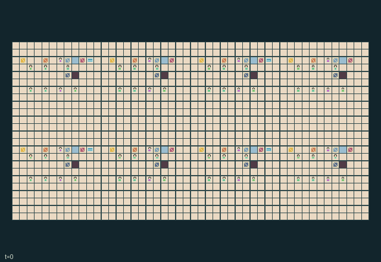

GI241 · Skyport Banquet Kitchens

Feed 32 passengers across eight kitchens before H=896, coordinating recipes, lifts, washing and departures.
Identity and original contract
64 independently actionable roles; 17 discrete commands per role; 733 native observation columns per role; original horizon 896 steps. Declared per-step reward range: -8.0 to 8.0. Observation regime: partially_observable.
Source SHA-256: 28bcfc20a24ce6c51091ff12efd320c58b98d9eddb2a0d3015f66f2240a294c3
The objective, rewards, population, map and horizon remain original. A preview is not a success claim.
Objective and gameplay
Feed 32 passengers across eight kitchens before H=896, coordinating recipes, lifts, washing and departures.
Loaded lifts need a nearby counterweight holder. Alternating passages govern access. Four shared wash reservoirs heat physically nearby benches after a delay. Orders are locally read and cargo/messages physically handed over.
- Eight workers per kitchen have individually selectable actions and exchangeable tools.
- Chop raw ingredients into an empty bench, tend cooking, then plate a ready meal. Shared washing steam warms benches and can spoil old food.
- A loaded lift moves only with a second worker at its counterweight. Moving opens one passage and closes the other.
- Read a local departure order with empty hands. Serve a matching meal during its first eight ticks; service returns a dirty tray.
- Wash reservoirs share water and heat between nearby benches. Adjacent consenting partners can exchange cargo and its order tag.
- Role view shows a radius-two native patch. Human controls and animation await independent integration.
Ending: Natural completion when cumulative accepted meals reaches 32; otherwise horizon truncation at 896.
What this game explores
Resource commons & externalities: An action changes a persistent resource or burden that another role also encounters. Compare extraction with maintenance and record the downstream resource trajectory.
Information, sensing & communication: Who knows a fact, when it was measured, and whether it was communicated are separate state variables. Test memory or communication using only the same role-visible evidence.
Commitment, exchange & governance: Promises consume time, liquidity, access or material. Separate an announced agreement from a binding commitment and from its eventual delivery; log cancellation and expiry too.
Complementary production & service: A useful outcome requires ordered stages, scarce equipment or another role's capability. Measure real completed products and resource circulation rather than counting intermediate actions as success.
Joint transport & shared access: Positions, load geometry, occupancy and persistent access constrain whose action can succeed next. Distinguish physical handoff, shared controls and simultaneous force from a cosmetic cooperation label.
Survival, protection & rescue: Protection and repair alter another role's future feasible actions. Record losses, exposure, rescue and infrastructure as well as delivery; survival is determined by the actual kernel.
These are questions supported by rule structure, not observed learning effects.
Play it: operating walkthrough
crucibles play --game gi241Keep Python running and open its printed address. Select this game, set a seed and press Create session. The game itself is always English.
Assign a role range to Host with Assign / take over, or Assign all roles. Invite a second participant with Create player invitation, then assign a disjoint subset. Every original role is available.
For every owned role choose a legal command and press Queue. Arrow keys / WASD queue a declared directional action for the current role camera when available. Space or Advance one joint step advances everyone together. Non-directional games use the selectors.
Unqueued roles use the labelled untrained uniform-legal policy. Take over or release roles before the next step without resetting. Full-state debug is privileged and permanently logged; role cameras preserve permissions. Close the session to retain logs. Server restart does not restore sessions.
Complete command reference
IDs and English labels exactly match the manifest. Availability depends on role, resources, location and phase. An available action can still have no productive effect.
0·Rest
1·East
2·West
3·South
4·North
5·Take ingredient
6·Chop into prep bench
7·Tend cooking
8·Plate cooked meal
9·Load service lift
10·Hold counterweight
11·Receive lift tray
12·Serve local departure
13·Wash dirty tray
14·Read local order with empty hands
15·Exchange tools with adjacent partner
16·Handoff cargo and message with adjacent partner
Roles and capability identifiers
These original role names describe capabilities, not interchangeable skins. Check each owned role's legal selector before planning handoffs.
agent_0·cook of kitchen 0
agent_1·counterweight operator of kitchen 0
agent_2·runner of kitchen 0
agent_3·dish steward of kitchen 0
agent_4·cook of kitchen 0
agent_5·counterweight operator of kitchen 0
agent_6·runner of kitchen 0
agent_7·dish steward of kitchen 0
agent_8·cook of kitchen 1
agent_9·counterweight operator of kitchen 1
agent_10·runner of kitchen 1
agent_11·dish steward of kitchen 1
agent_12·cook of kitchen 1
agent_13·counterweight operator of kitchen 1
agent_14·runner of kitchen 1
agent_15·dish steward of kitchen 1
agent_16·cook of kitchen 2
agent_17·counterweight operator of kitchen 2
agent_18·runner of kitchen 2
agent_19·dish steward of kitchen 2
agent_20·cook of kitchen 2
agent_21·counterweight operator of kitchen 2
agent_22·runner of kitchen 2
agent_23·dish steward of kitchen 2
agent_24·cook of kitchen 3
agent_25·counterweight operator of kitchen 3
agent_26·runner of kitchen 3
agent_27·dish steward of kitchen 3
agent_28·cook of kitchen 3
agent_29·counterweight operator of kitchen 3
agent_30·runner of kitchen 3
agent_31·dish steward of kitchen 3
agent_32·cook of kitchen 4
agent_33·counterweight operator of kitchen 4
agent_34·runner of kitchen 4
agent_35·dish steward of kitchen 4
agent_36·cook of kitchen 4
agent_37·counterweight operator of kitchen 4
agent_38·runner of kitchen 4
agent_39·dish steward of kitchen 4
agent_40·cook of kitchen 5
agent_41·counterweight operator of kitchen 5
agent_42·runner of kitchen 5
agent_43·dish steward of kitchen 5
agent_44·cook of kitchen 5
agent_45·counterweight operator of kitchen 5
agent_46·runner of kitchen 5
agent_47·dish steward of kitchen 5
agent_48·cook of kitchen 6
agent_49·counterweight operator of kitchen 6
agent_50·runner of kitchen 6
agent_51·dish steward of kitchen 6
agent_52·cook of kitchen 6
agent_53·counterweight operator of kitchen 6
agent_54·runner of kitchen 6
agent_55·dish steward of kitchen 6
agent_56·cook of kitchen 7
agent_57·counterweight operator of kitchen 7
agent_58·runner of kitchen 7
agent_59·dish steward of kitchen 7
agent_60·cook of kitchen 7
agent_61·counterweight operator of kitchen 7
agent_62·runner of kitchen 7
agent_63·dish steward of kitchen 7
Information and observation permissions
Only own prefix and radius-two Chebyshev 5x5 patch with exact listed channels enter the policy. Visible actor identity, role, crew, tools, cargo, stamina and message are in the patch. Each object attribute is in its group channels. Hidden cells and entities remain hidden; global debugger must be labeled. Clock alone is public.
The GIF is full-state debug and may reveal hidden entities or private state. Train on obs[agent], not the picture, state tree or another role's private row. Field slices and visibility are in the original manifest.
Reinforcement-learning integration
import jax
from crucibles_jaxmarl import make
env = make("gi241")
key = jax.random.PRNGKey(0)
key, rk, ak, sk = jax.random.split(key, 4)
obs, state = jax.jit(env.reset)(rk)
actions = env.sample_actions(ak, state)
obs, state, rewards, dones, info = jax.jit(env.step_env)(sk, state, actions)
done = dones["__all__"]Observations are float32 vectors of width 733; actions are scalar int32; masks have 17 entries. Supply all 64 roles each transition. Masked sampling is an engineering reference, not a trained learner.
step_env retains terminal data without reset. step performs outer autoreset and keeps terminal data in info["raw_state"] and info["raw_observation"]. Use dones["__all__"] for episode boundaries; separate completion, failure and time limit in analysis.
JIT or vmap equal identities and shapes. Split independent reset, policy and transition keys. Group different shapes explicitly; do not shrink the population or horizon. Host rendering stays outside training.
Training questions and fair evaluation
Define valid completion from the objective before fitting. Preserve original rewards and also report real deliveries/services, losses, resource state, unresolved episodes and per-role returns. Animation is not a reward signal.
An action changes a persistent resource or burden that another role also encounters. Compare extraction with maintenance and record the downstream resource trajectory.
Who knows a fact, when it was measured, and whether it was communicated are separate state variables. Test memory or communication using only the same role-visible evidence.
Promises consume time, liquidity, access or material. Separate an announced agreement from a binding commitment and from its eventual delivery; log cancellation and expiry too.
A useful outcome requires ordered stages, scarce equipment or another role's capability. Measure real completed products and resource circulation rather than counting intermediate actions as success.
Positions, load geometry, occupancy and persistent access constrain whose action can succeed next. Distinguish physical handoff, shared controls and simultaneous force from a cosmetic cooperation label.
Protection and repair alter another role's future feasible actions. Record losses, exposure, rescue and infrastructure as well as delivery; survival is determined by the actual kernel.
Compare memory, communication or centralized critics under matched actor information. Declare critic access; keep actor inputs role-filtered. Match partner/opponent distributions, masks, compute and checkpoint selection. Final tests never enter fitting or selection.
Independent training runs or source-pairing blocks are inferential units; episodes from one policy are not independent training replications. Save hashes, keys, versions, device, time and cost. Negative, zero, failed and indeterminate outcomes are valid. No trained checkpoint or target score is supplied.
Classification and evidence
Overlapping editorial labels are reading aids, not proof of novelty, difficulty, strategic equivalence or learning effects.
- Resource commons & externalities
- Evidence
scene.rules.4: Wash reservoirs share water and heat between nearby benches. Adjacent consenting partners can exchange cargo and its order tag.
- Information, sensing & communication
- Evidence
manifest.actions.16: Handoff cargo and message with adjacent partner
- Commitment, exchange & governance
- Evidence
scene.rules.4: Wash reservoirs share water and heat between nearby benches. Adjacent consenting partners can exchange cargo and its order tag.
- Complementary production & service
- Evidence
manifest.task.objective: Feed 32 passengers across eight kitchens before H=896, coordinating recipes, lifts, washing and departures.
- Evidence
manifest.actions.5: Take ingredient
- Evidence
manifest.actions.7: Tend cooking
- Joint transport & shared access
- Evidence
manifest.task.objective: Feed 32 passengers across eight kitchens before H=896, coordinating recipes, lifts, washing and departures.
- Evidence
manifest.actions.9: Load service lift
- Evidence
manifest.actions.11: Receive lift tray
- Survival, protection & rescue
- Evidence
scene.rules.1: Chop raw ingredients into an empty bench, tend cooking, then plate a ready meal. Shared washing steam warms benches and can spoil old food.
Source, receipts and preview limits
The world-only English GIF replays saved untrained legal actions through the original kernel. At most 25 actual endpoints include initial and terminal state; no invented interpolation. It is full-state debug, not the role observation.
Original source, observation slices, manifest and mechanism
Native receipt · Presentation receipt
Engineering passes do not establish learning. Nonzero floating differences remain recorded and undetermined; no new tolerance was introduced. Human scores remain unverified.